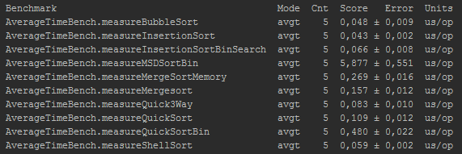
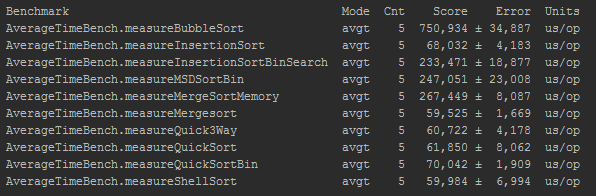
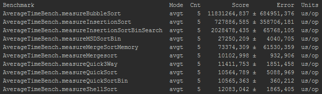

Время работы 10 сортировок:
- Пузырьковая сортировка - measureBubbleSort
- Сортировка вставками - measureInsertionSort
- Сортировка вставками с бинарным поиском - measureInsertionSortBinSearch
- MSD для двоичных чисел (без учёта знака) - measureMSDSortBin
- Сортировка слиянием без дополнительной памяти - measureMergeSortMemory
- Сортировка слиянием - measureMergesort
- Quick Sort + random для опорного + разделение на три части - measureQuick3Way
- Quick sort с фиксированным опорным элементом - measureQuickSort
- QuickSort для двоичных чисел (без учёта знака) - measureQuickSortBin
- Сортировка Шелла - measureShellSort
- На 10 элементах:

- На 1000 элементах:

- На 100000 элементах:

ГЛАВНАЯ СТРАНИЦА